SponsorBridge Design System
Every token, every scale, every rule — the single reference for translating SponsorBridge into Figma, decks, and downstream tools.
Color scales
Four brand colors, each with an 11-step Tailwind-style scale (50 → 950). The original brand hex sits at the step closest to its actual lightness. Green and teal are accent colors — they appear on text, icons, and CTAs, never as surface backgrounds.
Brand Green --brand-green-*
Brand Teal --brand-teal-*
Brand Red --brand-red-* · destructive/error only
Brand Deep Teal --brand-deep-teal-*
Brand Neutrals — gray scale (11 steps) --brand-neutral-*
Every gray the app uses anchored to a clean 11-step scale. The named surface tokens (panel, panel-alt, control, etc.) snap to one of these steps — see the role column in the tables below.
Pure endpoints
| Token | Hex | Use |
|---|---|---|
| brand-white | #FFFFFF | Pure white — logo on dark, foreground in dark mode, light backgrounds |
| brand-black | #000000 | Pure black — logo treatments, hard contrast contexts |
All grays used in the app, by hex
Quick reference — every distinct gray value plus the named role(s) that resolve to it. Copy any of these straight into Figma color styles.
| Hex | Closest scale step | Named roles in the app |
|---|---|---|
| #FFFFFF | brand-white | Light: --background, --surface-canvas, --surface-panel, --surface-control, --primary-foreground, --popover · Dark: --foreground, --primary-foreground (gradient), --card-foreground |
| #FAFAFA | neutral-50 | Light: --surface |
| #F7F7F7 | neutral-50/100 | Light: --surface-panel-alt, --secondary, --muted |
| #F0F0F0 | neutral-100 | Light: --line-subtle |
| #E6E6E6 | neutral-200 (brand-gray) | Light: --line-default, --border, --input · Brand-defined neutral |
| #D4D4D4 | neutral-300 | Dark: --foreground-secondary |
| #C8C8C8 | neutral-300/400 | Light: --line-strong, --border-crisp, --input border |
| #A3A3A3 | neutral-400 | Dark: --foreground-tertiary, --muted-foreground |
| #737373 | neutral-500 | Dark: --foreground-quaternary |
| #3A3A3A | neutral-700 | Dark: --line-strong, --border-crisp, --input border |
| #2A2A2A | neutral-800 | Dark: --line-default, --border |
| #202020 | neutral-800/850 | Dark: --surface-control (inputs, buttons backgrounds) |
| #181818 | neutral-900 | Dark: --surface-panel-alt, --secondary, --muted, --well |
| #111111 | neutral-900/950 | Dark: --surface-panel, --card, --popover, --sidebar |
| #0A0A0A | neutral-950 | Dark: --background, --surface-canvas (the app's deepest layer) |
| #000000 | brand-black | Logo treatments, marketing tiles, hard-contrast contexts (not used as an app surface) |
Neutrals — dark theme surfaces
Surfaces are intentionally green-free — neutral grays so the brand green reads as a precise accent against them.
| Role | Token | Hex | Used for |
|---|---|---|---|
| Canvas | --surface-canvas | #0A0A0A | App background |
| Panel | --surface-panel | #111111 | Cards, sidebar, popovers |
| Panel-alt | --surface-panel-alt | #181818 | Secondary panels, wells |
| Control | --surface-control | #202020 | Inputs, controls |
| Border | --line-default | #2A2A2A | Card/panel borders, dividers |
| Border strong | --line-strong | #3A3A3A | Inputs, crisp dividers |
| Foreground | --foreground | #FFFFFF | Primary text |
| Foreground-2 | --foreground-secondary | #D4D4D4 | Secondary text |
| Foreground-3 | --foreground-tertiary | #A3A3A3 | Tertiary text, captions |
| Foreground-4 | --foreground-quaternary | #737373 | Quaternary text, placeholders |
Neutrals — light theme surfaces
| Role | Token | Hex | Used for |
|---|---|---|---|
| Canvas / Panel | --surface-canvas / --surface-panel | #FFFFFF | App + card background |
| Panel-alt | --surface-panel-alt | #F7F7F7 | Secondary panels, muted backgrounds |
| Surface | --surface | #FAFAFA | Subtle surface tint |
| Border | --line-default · brand-gray | #E6E6E6 | Borders, dividers |
| Foreground | --foreground · brand-deep-teal-900 | #064E49 | Primary text |
| Foreground-2 | --foreground-secondary · deep-teal-600 | #11625E | Secondary text |
| Foreground-3 | --foreground-tertiary · deep-teal-500 | #1A7873 | Tertiary text |
Semantic mapping
Light theme uses darker scale steps (600/700) for legibility on white. Dark theme uses lighter steps (300/400) for legibility on near-black. Every semantic role has both.
| Role | Light | Dark | Notes |
|---|---|---|---|
| background | #FFFFFF | #0A0A0A | App canvas |
| foreground | #064E49 | #FFFFFF | Primary text |
| primary | #1FB874 · green-600 | #5BE3A4 · green-400 | CTA buttons, links |
| primary-hover | #16915C · green-700 | #6CD7A0 · green-300 | Hover state |
| primary-foreground | #FFFFFF | #042F1B | Text on primary fill |
| accent | #02A286 · teal-600 | #0DCFAB · teal-400 | Secondary accent |
| destructive | #C50117 · red-600 | #E73044 · red-400 | Errors, delete actions |
| border | #E6E6E6 | #2A2A2A | Card and panel borders |
| input | #C8C8C8 | #3A3A3A | Input borders |
| ring | #1FB874 | #5BE3A4 | Focus ring |
| muted | #F7F7F7 | #181818 | Muted backgrounds |
| muted-foreground | #11625E | #A3A3A3 | Muted text |
Active / selected interactive states
Selected sidebar items, settings tabs, and active <Tabs> triggers use a brand gradient — not a flat green tint — so the brand reads strongly on dark surfaces without coloring the surfaces themselves. The same treatment applies in both light and dark themes.
| Token | Value | Notes |
|---|---|---|
| state-active-gradient · start | #06C8A3 | Left edge (90deg horizontal) |
| state-active-gradient · end | #036351 | Right edge |
| state-active-fg | #FFFFFF | Text and icon color on the gradient (both themes) |
| state-hover-bg · light | rgba(31, 184, 116, 0.05) | Subtle green wash on hover |
| state-hover-bg · dark | rgba(91, 227, 164, 0.06) | Subtle green wash on hover |
A vertical variant .bg-state-active-gradient-vertical (180deg, same stops) is available for any UI element where the gradient should flow top-to-bottom instead of left-to-right.
Sidebar — expanded & collapsed (rail)
The desktop sidebar has two states. Expanded at 260 px with full labels and the show list. Collapsed at 64 px as an icon-only rail showing workspace avatar, top nav (Overview, Assistant), bottom nav (Sponsors, Assets, Settings), and the user menu. The collapsed rail never disappears — users always see where the sidebar lives.
| State | Width | Shows |
|---|---|---|
| Expanded | 260 px | Workspace · top nav · pinned shows · all shows · bottom nav · user |
| Collapsed (rail) | 64 px | Workspace avatar · Overview · Assistant · Sponsors · Assets · Settings · user avatar (icons only, with hover tooltips) |
Typography
Two typefaces, two roles. Headlines and sections go Space Grotesk. Body, labels, captions, small text go Inter Medium. Body weight defaults to Inter Medium (500), not Regular.
Primary — Space Grotesk
Bigger text, titles, section labels. Google Fonts: Space Grotesk.
Secondary — Inter Medium
Smaller text, subtitles, body copy, UI labels, data, tables. Default weight = Medium (500). Google Fonts: Inter.
SponsorBridge is a modern workflow platform built for media teams to manage sponsored content, campaigns, and podcasts with clarity and structure.
Type styles
Named utility classes in globals.css. Use these as Figma text-style equivalents — copy the family, size, weight, line-height, and letter-spacing into Figma styles with the same names.
All h1–h6 use Space Grotesk by default
Recommended display sizes (for marketing & hero work)
| Use | Size / line | Weight | Tracking |
|---|---|---|---|
| Hero display | 56 / 61.6 | Space Grotesk · 600 | -0.02em |
| Section display | 40 / 44 | Space Grotesk · 600 | -0.02em |
| H1 | 32 / 38.4 | Space Grotesk · 600 | -0.02em |
| H2 | 24 / 28.8 | Space Grotesk · 600 | -0.02em |
| H3 | 20 / 24 | Space Grotesk · 600 | -0.01em |
| H4 | 16 / 19.2 | Space Grotesk · 600 | -0.01em |
| Body large | 18 / 27.9 | Inter · 500 | 0 |
| Body | 16 / 24.8 | Inter · 500 | 0 |
| Body small | 14 / 21 | Inter · 500 | 0 |
| Caption | 13 / 19.5 | Inter · 500 | 0 |
| Micro | 11 / 11 | Space Grotesk · 600 uppercase | 0.10em |
Spacing — Rule of 4
Every spacing, sizing, gap, and radius value is a multiple of 4. No arbitrary values. In Figma, set your spacing tokens to this scale and lock all auto-layout gaps to it.
When to use which
| Context | Token | Pixels |
|---|---|---|
| Icon-to-text gap | gap-1 | 4 px |
| Form control vertical rhythm | gap-2 / space-y-2 | 8 px |
| Card inner padding (tight) | p-3 | 12 px |
| Card inner padding (default) | p-4 | 16 px |
| Card inner padding (loose) | p-6 | 24 px |
| Section spacing on a page | space-y-6 | 24 px |
| Major section gaps | space-y-8 / gap-8 | 32 px |
| Page-level breathing room | space-y-12 | 48 px |
Radius & shadows
Border radius
4 px
6 px
8 px
10 px
14 px
Shadows (green-tinted ink for brand cohesion)
0 1px 2px rgba(6,78,73,.06)
0 2px 8px rgba(6,78,73,.08)
0 8px 24px rgba(6,78,73,.10)
0 16px 48px rgba(6,78,73,.14)
Iconography
Two systems. Tabler Icons for all UI iconography (stroke-based, weight 1.75, the shadcn-supported set). The 10 brand SVGs for editorial / hero / empty-state moments only.
UI icons — Tabler Icons
Browse and copy SVGs at tabler.io/icons. The codebase wraps Tabler in the <Icon> component with a snake_case name API (name="chevron_right" → IconChevronRight). In Figma, install the Tabler Icons community plugin or copy individual SVGs from tabler.io.
Sizes
Icon vocabulary — sample of the name → Tabler map
The full map lives in apps/web/src/components/ui/icon.tsx. To add a new icon: import its Tabler React component and add an entry to iconMap. Browse all 5800+ at tabler.io/icons.
| name="..." | Tabler component | name="..." | Tabler component |
|---|---|---|---|
| check | IconCheck | add | IconPlus |
| close | IconX | search | IconSearch |
| keyboard_arrow_down | IconChevronDown | menu | IconMenu2 |
| keyboard_arrow_up | IconChevronUp | more_horiz | IconDots |
| chevron_right | IconChevronRight | more_vert | IconDotsVertical |
| chevron_left | IconChevronLeft | settings | IconSettings |
| dashboard | IconLayoutDashboard | auto_awesome | IconSparkles |
| folder_open | IconFolderOpen | group | IconUsers |
| person | IconUser | logout | IconLogout |
| delete | IconTrash | edit | IconPencil |
| content_copy | IconCopy | visibility | IconEye |
| info | IconInfoCircle | warning | IconAlertTriangle |
| error | IconAlertCircle | cancel | IconCircleX |
| check_circle | IconCircleCheck | push_pin | IconPin / IconPinFilled |
| podcasts | IconHeadphones | progress_activity | IconLoader2 (animate-spin) |
| left_panel_close | IconLayoutSidebarLeftCollapse | left_panel_open | IconLayoutSidebarLeftExpand |
Brand icons — 10 SponsorBridge SVGs (editorial use only)







Logo & favicon
Four approved color treatments. The brand mark is a geometric form combined with the SponsorBridge wordmark. Use full lockup for marketing, visual mark only for compact app contexts (favicons, app icons).
Approved color variations
Favicon set
All sizes available as SVG (preferred) and PNG fallback in /brand/favicon/.
| File | Size | Use |
|---|---|---|
| favicon-16.svg | 16 × 16 | Browser tab |
| favicon-32.svg | 32 × 32 | Browser tab (hi-DPI) |
| favicon-64.svg | 64 × 64 | Bookmarks |
| favicon-128.svg | 128 × 128 | Pinned tab |
| favicon-1024.svg | 1024 × 1024 | App icon source |
Do & don't
The non-negotiables when applying the brand across surfaces.
Do
- Use brand green for accents only — text, icons, links, focus rings, primary CTAs.
- Default to the dark theme. Light theme is the opt-in alternative.
- Use Inter Medium (500) as the body default, not Regular.
- Use Space Grotesk on every heading and section label.
- Keep every spacing value as a multiple of 4.
- Use brand red #C50117 for destructive / error states only.
- Use Material Symbols Rounded for all UI iconography.
- Use the 10 brand SVGs for editorial / hero / empty-state moments only.
- Use only the four approved logo color treatments.
Don't
- Tint surfaces (backgrounds, panels, borders) with green — surfaces stay neutral.
- Use brand red as a general accent or highlight color.
- Use arbitrary spacing like [7px] or [15px].
- Fall back to Inter Regular for body — body weight is Medium (500).
- Hard-code hex colors on icons — use semantic tokens that re-color across themes.
- Recolor the logo outside the four approved variations.
- Apply drop-shadows or effects to the logo mark.
- Stretch, crop, or squash the logo — preserve aspect ratio.
- Mix Material Symbols and Lucide (or any other icon library) in the same product.